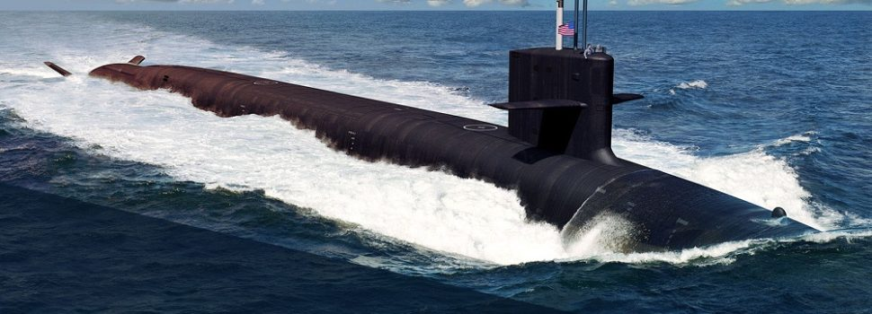

Submarines
A submarine is a watercraft capable of independent operation underwater. The term most commonly refers to a large, crewed vessel.Submarines were first widely used during World War I.
Military uses include attacking enemy surface ships (merchant and military), attacking other submarines, aircraft carrier protection, blockade running, ballistic missile submarines as part of a nuclear strike force, reconnaissance, conventional land attack (for example using a cruise missile), and covert insertion of special forces. Civilian uses for submarines include marine science, salvage, exploration and facility inspection and maintenance. Submarines can also be modified to perform more specialized functions such as search-and-rescue missions or undersea cable repair. Submarines are also used in tourism, and for undersea archaeology.
Submarines have one of the widest ranges of types and capabilities of any vessel. They range from small autonomous examples and one- or two-person vessels that operate for a few hours, to vessels that can remain submerged for six months such as the Russian Typhoon class, the biggest submarines ever built. Submarines can work at greater depths than are survivable or practical for human divers.Modern deep-diving submarines derive from the bathyscaphe, which in turn evolved from the diving bell.